Segue o link do Collab utilizado para colocar os códigos em python e mostrar o resultado dos experimentos:
Acessar Collab.
Objetivos
1. Determinação dos parâmetros LPC
2. Separação Sonora/Surda
3. Espectro e Envoltória LP
4. Comparação de Codificações MPEG
Para a primeira parte do experimento, foram gravados áudios que serão analisados no deccorer do relatório.
Poesia Declamada
Nome Sobrenome
O primeiro áudio analisado foi o da poesia declamada.
Inicialmente, foi plotado o formato de onda do áudio.
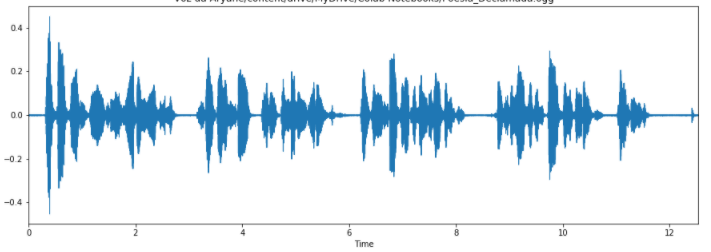
Fig.1 - Plot da Onda.
Em seguida, definiu-se um janelamento, como mostrado abaixo:
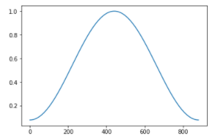
Fig.2 - Janelamento.
Para os cálculos dos parâmetros LPC, separação U/UV e Espectro + Envoltória, foi utilizada somente a primeira estrofe. O plot da estrofe segue abaixo:
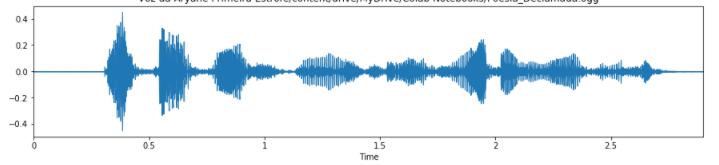
Fig.3 - Corte na primeira estrofe.
O primeiro plot realizado foi o de Energia da primeira estrofe, que segue abaixo:
Fig.4 - Energia Primeira Estrofe.
Em seguida, foram plotadas curvas que unem a energia do sinal com a distribuição de frequência.
Primeiro para os segmentos sonoros:
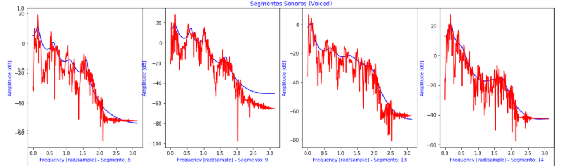
Fig.5 - Segmentos sonoros da primeira estrofe.
Seguidos pelos segmentos surdos:
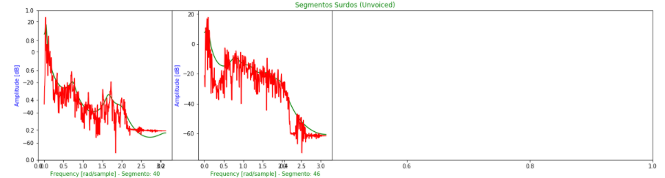
Fig.6 - Segmentos surdos da primeira estrofe.
Finalizando a análise da primeira estrofe, foi gerado um Espectrograma, como mostrado abaixo:
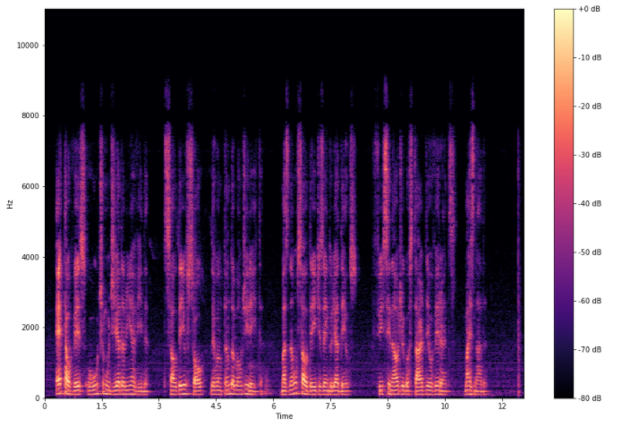
Fig.7 - Espectrograma da primeira estrofe.
Observando o espectro em vermelho real e a comparando com a linha azul LPC vemos que O LPC analisa o sinal de voz estimando os formantes, removendo seus efeitos do sinal de voz e estimando a intensidade e a frequência do zumbido restante. O processo de remoção dos formantes é chamado de filtragem inversa, e o sinal remanescente após a subtração do sinal modelado filtrado é chamado de resíduo. Codificação preditiva linear
A análise do segundo áudio se deu de forma similar.
Para os cálculos dos parâmetros LPC, separação U/UV e Espectro + Envoltória, foi utilizada somente o primeiro. O plot do nome segue abaixo:
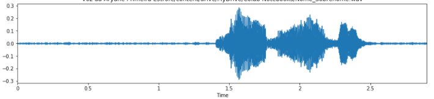
Fig.8 - Corte na primeiro nome.
O primeiro plot realizado foi o de Energia do primeiro nome, que segue abaixo:
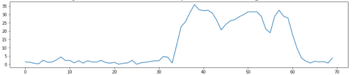
Fig.9 - Energia Primeiro Nome.
Em seguida, foram plotadas curvas que unem a energia do sinal com a distribuição de frequência.
Primeiro para os segmentos sonoros:
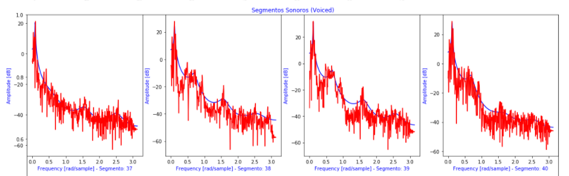
Fig.10 - Segmentos sonoros do primeiro nome.
Seguidos pelos segmentos surdos:
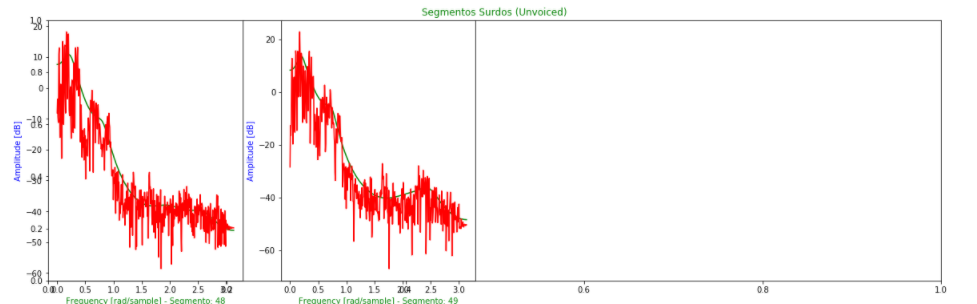
Fig.11 - Segmentos surdos do primeiro nome.
Finalizando a análise do primeiro nome, foi gerado um Espectrograma, como mostrado abaixo:
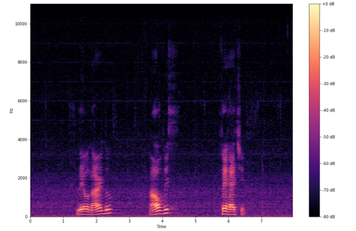
Fig.12 - Espectrograma do primeiro nome.
Como no outro caso, foi possível observar que O LPC analisa o sinal de voz
estimando os formantes, removendo seus efeitos do sinal de voz e estimando a intensidade e a frequência do zumbido restante.